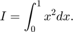

Counting the success rate of meanMC_g
Authors: Lan Jiang and Sou-Cheng Choi, July 2017
Define an integration problem as follows:

The analytical solution is . If we use meanMC_g to estimate the integral with replications, we expect the success rate to be bigger than or equal to (1 - alpha).
success = 0; n = 1000; in_param.reltol = 0; in_param.abstol = 1e-3; in_param.alpha = 0.05; Yrand = @(n) rand(n,1).^2; exactsol = 1/3; for i = 1:n, tmu = meanMC_g(Yrand,in_param); check = abs(exactsol-tmu) < 1e-3; if check == 1, success = success + 1; end end disp(['Over ' num2str(n) ' replications, there are ' num2str(success) ' successes.']) disp(['The success rate is ' num2str(success/n) ', which is larger than '... num2str(1-in_param.alpha) '.'])
Over 1000 replications, there are 997 successes. The success rate is 0.997, which is larger than 0.95.